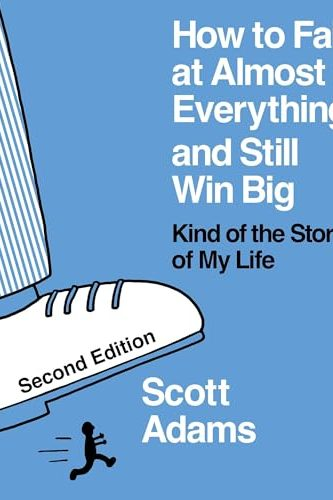

Library › Self-Improvement
How to Fail at Almost Everything and Still Win Big — Summary & Key Lessons

Kind of the story of my life — systems over goals, talent stacks, and engineering your own luck.
📖 OPEN THE FULL INTERACTIVE BREAKDOWN →🌐 Read it in Hindi, Hinglish, Gujarati, Tamil & 22 more languages — free, with audio.
💡 The Big Idea
Adams' resume before Dilbert is a graveyard: failed restaurants, failed inventions, failed video game, a corporate career capped by being told he'd never be promoted — and the book's engine is what the failures taught: GOALS ARE FOR LOSERS, SYSTEMS ARE FOR WINNERS (a goal — 'lose 10kg' — keeps you in pre-success failure-state daily and expires on achievement; a system — 'learn to eat right, be active daily' — pays every time you use it and never expires; wannabe screenwriters have a goal, working writers have a writing system), the TALENT STACK (you don't need top-1% at anything — combine several top-25% skills until the COMBINATION is top-1%: Adams = decent drawer + decent jokes + business experience = the only business-cubicle cartoonist alive), MANAGE ENERGY, NOT TIME (schedule your hardest creative work at your personal peak — his: 5 AM; guard it ferociously; everything else fits around the maximum), the SUCCESS FORMULA: every skill you acquire doubles your odds (learn public speaking, psychology, basic accounting, writing — each multiplies the stack), FAILURE AS RESOURCE (fail forward: extract the skill, contact or knowledge from every faceplant — his failed ventures each donated a component to Dilbert's empire), and AFFIRMATION-FLAVORED FOCUS (whatever the mechanism, writing goals repeatedly concentrates attention and selective perception on opportunities — placebo or not, aim the machine). The tone is the medicine: luck can't be commanded, but you can build a bigger surface area for it to strike.
🧠 The 4 Key Lessons
Lesson 1: Systems Beat Goals: Design for Daily Wins
Chapters 1-6
A goal is a future event with a pass/fail exam; a system is a repeated behavior that raises your odds continuously. The psychology is the point: goal-pursuers live in sustained failure ('not there yet' every single day, then brief victory, then goal-vacuum); system-runners win every day they execute, which compounds motivation instead of draining it. Conversion is mechanical: 'write a bestseller' → 'write 500 words daily'; 'get promoted' → 'learn one adjacent skill per quarter and demo it'; 'find a partner' → 'be in three new social contexts weekly.' Adams' test for any ambition: what's the daily/weekly behavior version, and does it build transferable value even if the target never lands? Systems also survive pivots — the blog that 'failed' as a business was the writing system that produced the book deals.
📖 Example: Adams' own path is the case study: his SYSTEM was 'create something with low odds but huge upside, before work, every morning at 5 AM, forever' — the specific projects (games, inventions, comics) were interchangeable lottery tickets; the system was the… Read the full example →
⚡ Do this: Take your #1 ambition and strip it to a system: a behavior repeatable daily/weekly that builds value regardless of outcome. Define the trigger, time and minimum dose. Then delete the deadline anxiety — track only execution streaks for 90 days.
Lesson 2: The Talent Stack: Get Good, Not Great, at Compatible Things
Chapters 12-16
World-class at one thing is genetic-lottery territory; PRETTY GOOD at several compatible things is available to everyone — and multiplication does the rest: top-25% in three complementary skills ≈ top-1% combination, because almost nobody holds that exact set. Design your stack deliberately: start with your existing base, then add MULTIPLIER skills that upgrade everything else — Adams' universal list: public speaking (his Dale Carnegie course, repaid ten-thousand-fold), psychology of persuasion (the interface to all humans), writing clearly, basic accounting/business literacy, conversation technique, and 'a little knowledge of a lot' (breadth makes you the person who connects rooms). The strategic question isn't 'what am I best at?' but 'what combination could I own?' — and stacks de-risk life: any single skill can be commoditized; a rare combination is a personal monopoly that travels across industries and decades.
📖 Example: Adams does the math on himself relentlessly: 'I'm a mediocre artist — thousands draw better. My jokes are B+. My business knowledge is ordinary for an MBA-track corporate guy. But the set {can draw + funny + lived in cubicles} had a global population of… Read the full example →
⚡ Do this: Map your stack: list your top-25% skills (be generous — 'pretty good' counts). Identify the ONE multiplier skill (speaking, writing, persuasion, data basics) that upgrades your whole set, and enroll in its cheapest structured version this month. Then write the sentence: 'I am the only ___ who also ___.'
Lesson 3: Energy, Luck Surface, and Failing Forward
Chapters 7-11, 17-38
MANAGE ENERGY LIKE CAPITAL: identify your peak hours and spend them ONLY on high-value creation (Adams: 5-9 AM for creative work; admin in the afternoon trough); optimize inputs that raise the baseline — sleep, food (simplify decisions), exercise DAILY at 'no willpower required' intensity (the system version: never skip, never strain), because personal energy is the multiplier on every other asset. ENGINEER LUCK'S SURFACE AREA: you can't summon lightning, but you can build more towers — ship small public projects, meet people outside your bubble, acquire visible skills; each is a lottery ticket that also pays dividends in skill. FAIL FORWARD: audit every failure for its exportable components (a skill, a contact, a proven demand, a cautionary pattern) — Adams' failed 'Dilberito' burrito venture taught him distribution and licensing that later protected Dilbert deals; the failed video game taught interface thinking his comic's simplicity reflects. And his closing meta-rule: be useful, stay flexible on the WHAT, be rigid on the SYSTEM — identity anchored to a process survives any single project's funeral, which is exactly how a man with his failure count ends up writing the book on winning.
📖 Example: The 5 AM testimony: for years before syndication, Adams woke at 4-something, drew from 5-7, went to his corporate job, and banked the world's freshest hours for his own equity — 'I gave Pacific Bell my B-hours; the A-hours were mine.' When Dilbert hit, the… Read the full example →
⚡ Do this: Run the energy audit for one week: rate output quality by hour; then ruthlessly reassign your top-2 hours to creation only (no meetings, no email — defend them like income). Simultaneously start a 'failure inventory': for your last three flops, write the one skill/contact/insight each donated — and where you'll deploy it next.
Lesson 4: The Moist Robot: Diet, Exercise, and Programming Your Own Hardware
Chapters 26-33: The Body Chapters
Adams' least famous, most load-bearing idea: view yourself as a 'moist robot' — a programmable machine whose inputs (food, sleep, movement, environment) determine outputs (energy, mood, willpower) — and stop treating health as a character test. The programming rules: make healthy eating EFFORTLESS, never disciplined (stock only foods you can eat unlimited amounts of; engineer laziness to work FOR you — willpower is a bug, architecture is the patch); learn which foods drain you personally (his simple experiment: note energy 30-60 minutes after eating; delete the crashes) — diet is discovered, not prescribed; for exercise, adopt the 'be active every day' system with the genius hack of the MINIMUM: on no-motivation days, just put on your gym clothes and go — permission to leave immediately granted (you almost never leave; the hard part was never the workout, it was the transition); and NEVER exercise so hard today that you dread tomorrow — sustainable beats optimal, because the system that survives Tuesday's mood beats the program that doesn't. The meta-point ties the book together: energy is the master resource that makes every other system (career, stack-building, creativity) executable — so the body chapters aren't a health tangent; they're the power supply.
📖 Example: Adams' own programming: he keeps his desk stocked with only 'unlimited' foods (protein, nuts, vegetables), eliminated his personal energy-killers after weeks of after-meal logging (his surprise finding: 'healthy' foods that wrecked him specifically), and has… Read the full example →
⚡ Do this: Program the robot this month: (1) restock your most-visible food spaces with only eat-unlimited items — make the lazy choice the right choice; (2) run the energy log for two weeks (note food → energy 45 minutes later) and delete your top-2 crashers; (3) install the minimum-viable workout rule: clothes on, show up, leaving allowed. Judge everything by one metric: is tomorrow's energy higher?
✅ 5-Step Action Plan
- Convert every goal into a daily system; track streaks, not outcomes.
- Build your talent stack: add one multiplier skill (speaking, writing, persuasion) this quarter.
- Give your peak hours to creation; give the leftovers to logistics.
- Expand luck's surface: ship small public things and meet unfamiliar rooms.
- Audit failures for exportable parts — nothing leaves without paying tuition.
💬 Best Quotes from How to Fail at Almost Everything and Still Win Big
- “Losers have goals. Winners have systems.”
- “Every skill you acquire doubles your odds of success.”
- “Failure is where success likes to hide in plain sight.”
Interactive version: mark lessons as read, listen in your language, share quote cards.